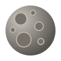
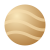
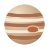

（℃）
（1024 kg）
（km）
（kg/m3）
（m/s2）
（小时）
（106 km）
（地球日）






太阳系的八大行星，按距离太阳由近到远排列。点击行星名称，可阅读 NASA 的行星介绍。
| 行星分类 | 行星名称 | 行星图片 | 物理参数 | 轨道参数 | 平均温度 （℃） |
||||||
|---|---|---|---|---|---|---|---|---|---|---|---|
| 质量 （1024 kg） |
直径 （km） |
密度 （kg/m3） |
重力加速度 （m/s2） |
自转周期 （小时） |
距太阳平均距离 （106 km） |
公转周期 （地球日） |
|||||
| 类地行星 | 水星 |  |
0.330 | 4,879 | 5,427 | 3.7 | 1,407.6 | 57.9 | 88.0 | 167 | |
| 金星 |  |
4.87 | 12,104 | 5,243 | 8.9 | −5,832.5 | 108.2 | 224.7 | 464 | ||
| 地球 | |
5.97 | 12,756 | 5,514 | 9.8 | 23.9 | 149.6 | 365.2 | 15 | ||
| 火星 | |
0.642 | 6,792 | 3,933 | 3.7 | 24.6 | 227.9 | 687.0 | −65 | ||
| 巨行星 | 气态巨行星 | 木星 |  |
1,898 | 142,984 | 1,326 | 23.1 | 9.9 | 778.6 | 4,331 | −110 |
| 土星 | |
568 | 120,536 | 687 | 9.0 | 10.7 | 1,433.5 | 10,747 | −140 | ||
| 冰巨行星 | 天王星 | 86.8 | 51,118 | 1,271 | 8.7 | −17.2 | 2,872.5 | 30,589 | −195 | ||
| 海王星 | 102 | 49,528 | 1,638 | 11.0 | 16.1 | 4,495.1 | 59,800 | −200 | |||
| 说明：参数为教学用近似值；图片为示意图，大小不代表行星的真实比例。 | |||||||||||
| 单位换算 | 质量一栏的数值需乘以 1024 kg，距离一栏的数值需乘以 106 km；1 地球日为 24 小时。 |
|---|---|
| 直径 | 这里采用赤道直径，而非平均直径。 |
| 自转周期 | 这里采用相对恒星的自转周期。负号表示逆向自转，不表示时间小于零。 |
| 距离与温度 | 距离为轨道平均距离；温度为近似参考值，各行星的测量条件不同。 |
| 行星范围 | 本表列出八大行星；月球是地球的天然卫星，冥王星属于矮行星，均未列入。 |
| 数据参考 | NASA Planetary Fact Sheet（行星数据表）。本页采用常见教学近似值，未与该站点的最新版本逐项核对。 |